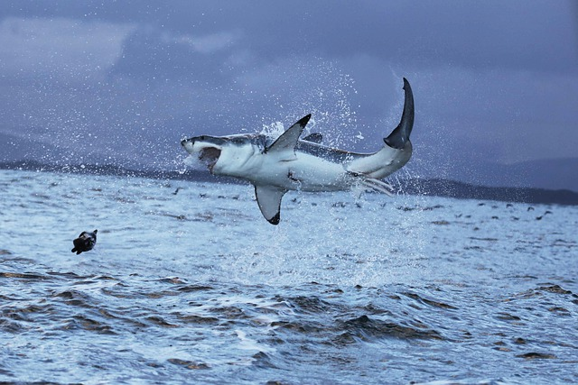
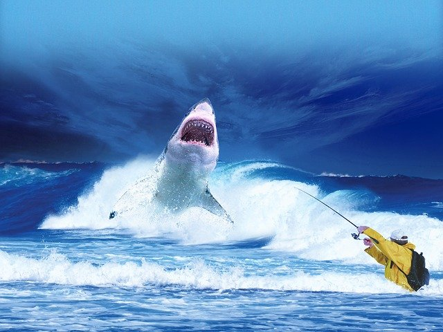

General Information
The Great White Shark, the shark most humans fear do to its notable representation in the JAWS movies. The Great White Shark belongs to a species of shark known as the mackerel shark. Of the species of Great White Shark the females are larger than their male counterparts growing to around 20 feet in length. The lifespan of the Great White is estimated to be around 70 years or more.
Fun Facts
- Great whites are very curious
- Shark fins are like fingerprints
- Great whites are fast long-distance swimmers
- South Africa uses drones to spot sharks

Top Predator?
Contrary to popular belief Great White Sharks are not the "top predator" of the ocean. That title goes to the Orca. Orcas are known to feed on Great Whites and many others types of shark.